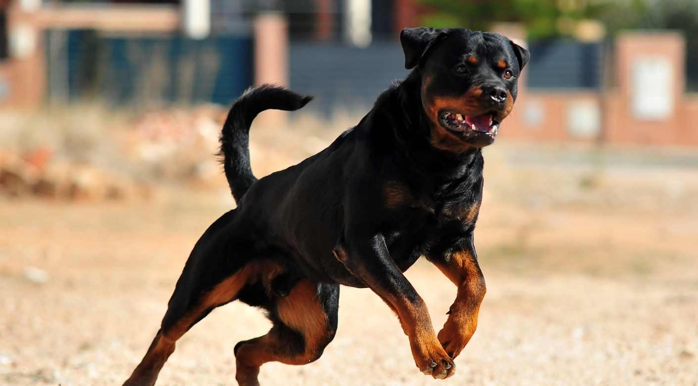
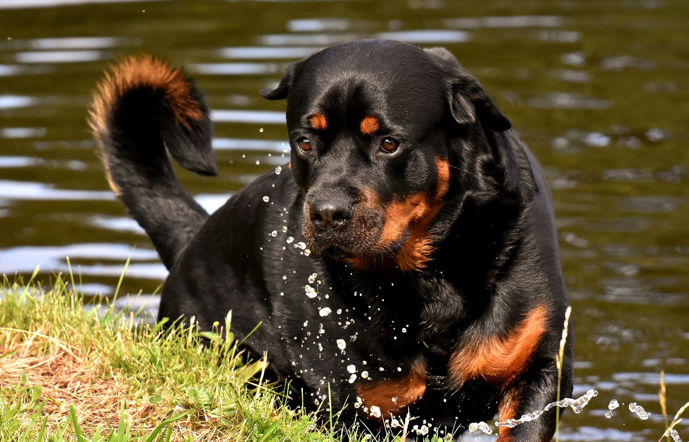
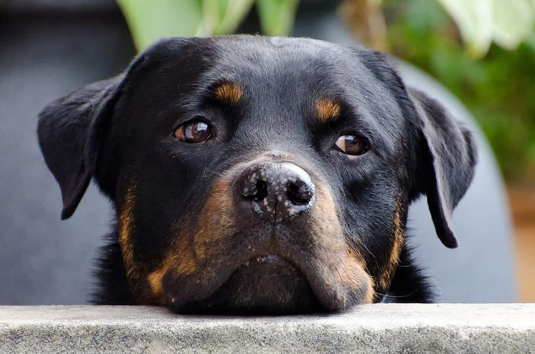
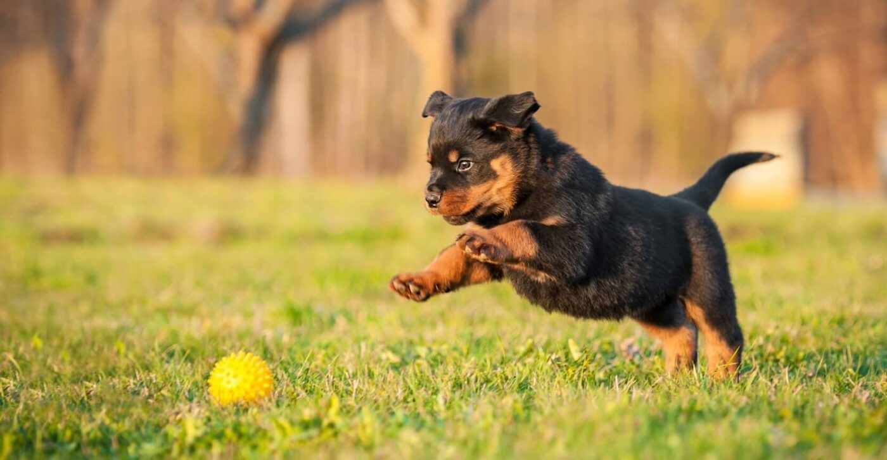

Historia del Rotwailler
El Rottweiler es una de las razas de perros más antiguas, conocida por su fuerza, lealtad y versatilidad. Su historia se remonta a la época del Imperio Romano, cuando los romanos necesitaban perros robustos para conducir y proteger el ganado durante sus campañas militares. Estos perros acompañaban a las legiones romanas a través de los Alpes hasta lo que hoy es Alemania, donde se establecieron y evolucionaron. El nombre "Rottweiler" proviene de la ciudad de Rottweil, donde estos perros eran conocidos como "Rottweiler Metzgerhund" (perros de carnicero de Rottweil) debido a su uso para conducir ganado y proteger las propiedades de los carniceros. El reconocimiento formal de la raza y la estandarización de sus características físicas y temperamentales ocurrieron en el siglo XX. La Federación Cinológica Internacional (FCI), la principal organización internacional de registro de razas de perros, reconoció oficialmente al Rottweiler en 1966.

Orígenes y Desarrollo
Los ancestros del Rottweiler moderno fueron probablemente los perros de trabajo de los romanos, conocidos por su capacidad para manejar ganado y su instinto protector. Durante la Edad Media, en la ciudad de Rottweil en Alemania, estos perros fueron cruzados con razas locales, y su descendencia se convirtió en el "Rottweiler Metzgerhund" (perro de carnicero de Rottweil). Los carniceros usaban estos perros para conducir el ganado al mercado y proteger sus propiedades y bienes de los ladrones.
Reconocimiento y Popularidad
A medida que el uso del ferrocarril y otros métodos de transporte moderno sustituyeron el pastoreo de ganado, la necesidad de estos perros disminuyó. Sin embargo, su versatilidad y capacidad para realizar diversas tareas, como el trabajo policial y de protección, les permitió mantenerse en uso. Durante el siglo XX, la raza fue refinada y estandarizada, y su popularidad creció en todo el mundo. El Rottweiler fue reconocido oficialmente por la Federación Cinológica Internacional (FCI) en 1966. En Estados Unidos, el American Kennel Club (AKC) reconoció a la raza en 1931.
Características Físicas
Los Rottweilers son perros de tamaño mediano a grande, con una constitución fuerte y musculosa. Tienen una cabeza ancha, orejas medianas y caídas, y una mandíbula poderosa. Su pelaje es corto, denso y de color negro con marcas bien definidas de color marrón o caoba en las mejillas, hocico, pecho y patas.
Temperamento
El Rottweiler es conocido por su lealtad, inteligencia y naturaleza protectora. Son perros confiados y valientes, y si bien pueden ser reservados con los extraños, son muy cariñosos y devotos con su familia. Requieren una socialización adecuada desde una edad temprana y un entrenamiento consistente y positivo para desarrollar su mejor comportamiento.